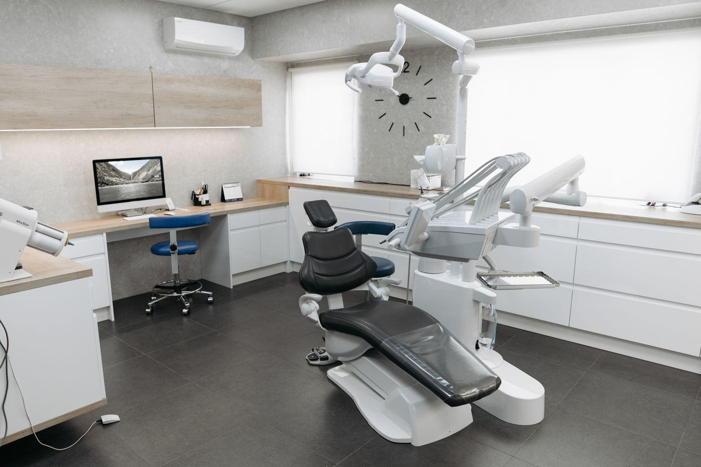

Explain the next step
Plain language, useful information, and time for questions before a decision is made.

It is the information you find before you visit. The person who listens to your question. The explanation that makes an unfamiliar next step feel a little clearer.
Gara Medica is a concept for a multidisciplinary clinic built around that idea: thoughtful medicine, carefully organized, with room for human attention.
Six focused departments bring different expertise into one connected experience. The aim is simple — to help people understand their options and feel involved in their care.
Explore our departmentsPlain language, useful information, and time for questions before a decision is made.
Privacy, consent, and attention to individual needs at every stage of a visit.
A thoughtful path between consultations, diagnostic appointments, and follow-up.
A clinic experience shaped by feedback and a commitment to thoughtful processes.
Light-filled rooms and considered details support a calm visit. Comfort complements care.
 A LIGHTER CLINICAL ENVIRONMENT
A LIGHTER CLINICAL ENVIRONMENTConsultations with privacy. Shared expertise across departments. A team approach that keeps the patient’s understanding at the centre.
Meet the peopleA real clinic website should make verified professional registrations, clinical governance, infection prevention processes, and patient feedback channels easy to find.
This showcase does not claim accreditations, awards, or certifications. Those details must be supplied and verified by the operating clinic before launch.
All people, statistics, and clinical descriptions are fictional demonstration content. Reference photographs do not depict one real Gara Medica facility.